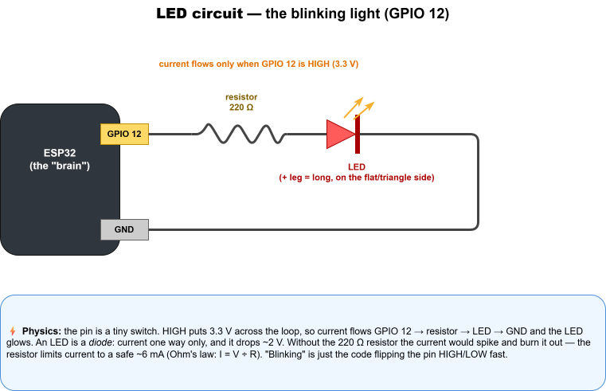
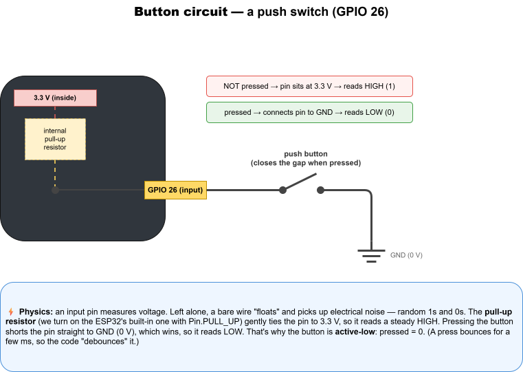
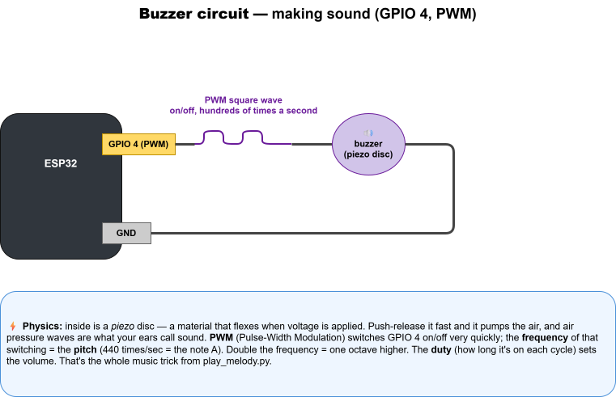
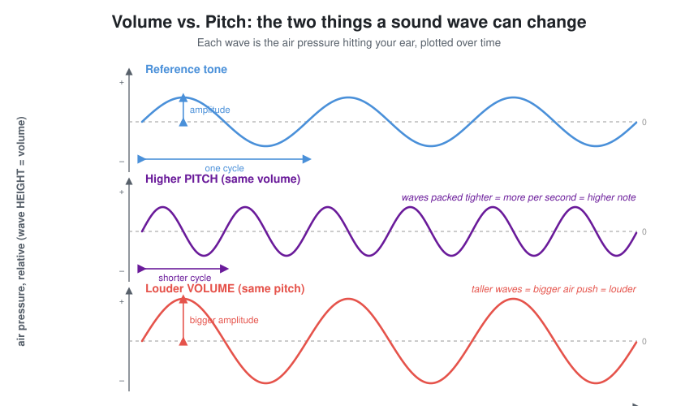
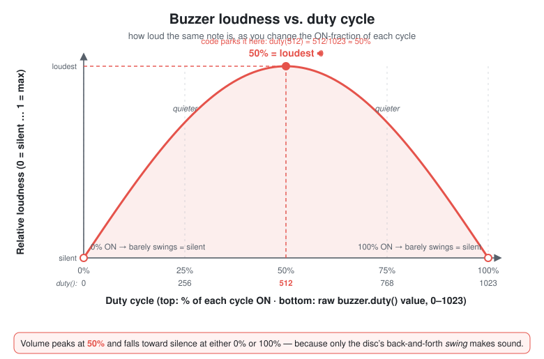
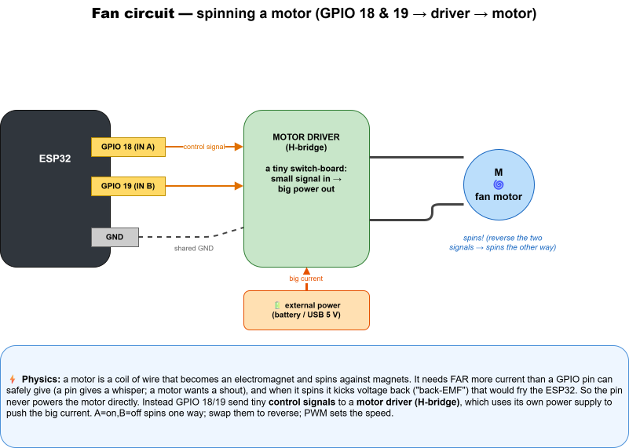

Your smart house is code and electricity. Each part — the light, the buttons, the buzzer, the fan — is a little circuit: a complete loop that electricity flows around. If the loop is broken anywhere, nothing happens. Here are the four circuits you'll build, each with the physics in plain words.
GND (ground, 0 V). Voltage (measured in volts) is the "push"; current (amps) is the "flow"; a resistor (ohms, Ω) is a "narrow pipe" that limits the flow. That's Ohm's law: current = voltage ÷ resistance.

GPIO 12 → resistor → LED → GND and the LED lights. Set it LOW (0 V) and the flow stops — dark. "Blinking" is just the code flipping HIGH/LOW.
An LED (Light-Emitting Diode) is a diode: it only lets current through one way (long leg = +, toward the pin), and it "spends" about 2 V turning electricity into light. The 220 Ω resistor is the safety valve — without it the current would spike and burn the LED out in an instant. With it, the current is a safe ~6 mA.

Pin.PULL_UP), which gently ties the pin to 3.3 V so it reads a steady HIGH (1).
Press the button and you connect that pin straight to GND. Ground wins, the pin drops to 0 V, and it reads LOW (0). That's why the button is active-low: pressed = 0, not-pressed = 1. A physical button also "bounces" (the metal contacts chatter for a few milliseconds), so the code debounces it — ignores repeats within ~250 ms.

We drive it with PWM (Pulse-Width Modulation): GPIO 4 switches on/off hundreds of times a second. The frequency of that switching is the pitch — 440 flips per second is the musical note A. Double the frequency and you go up one octave (that's the whole trick in play_melody.py).
Sound is a wave of air pressure hitting your ear. A wave can only change in two ways, and each one is a different thing you hear:

buzzer.freq().They're independent: you can make a wave taller or tighter without touching the other. That's why pitch and volume are two separate controls.
| Knob (in code) | Timescale | Controls |
|---|---|---|
buzzer.freq() | how many cycles per second | pitch — which note |
buzzer.duty() | inside one cycle (microseconds) | volume & tone |
time.sleep_ms() | the whole note (a fraction of a second) | duration — how long it plays |
sleep_ms() that keeps the buzzer running before the next note. Duty is the on/off shape of a single cycle — and at 440 Hz there are ~176 of those cycles packed into one 400 ms note.
Loudness is how big the piezo's back-and-forth swing is. Only the changing part of the voltage moves the disc — a steady, unchanging voltage makes no sound at all (the disc flexes once and just holds still). Duty is the fraction of each cycle the pin is HIGH, and it decides how big that swing is:
| Duty | What the disc does | Volume |
|---|---|---|
| ~0% (barely on) | tiny pulses, hardly moves | almost silent |
| 25% | uneven push/release | medium |
| 50% | equal push & release — biggest swing | loudest 🔊 |
| 75% | uneven the other way | medium |
| ~100% (almost always on) | nearly steady voltage, hardly moves | almost silent |

So it's not simply "more duty = louder." As the graph shows, volume peaks at 50% and drops off as you head toward either 0% or 100% (mathematically it follows sin(π × duty)). That's exactly why the code parks the buzzer at duty(512). That 512 has no physical unit — it's a raw PWM duty count on MicroPython's scale, a whole number from 0 to 1023 (a 10-bit value, not volts or seconds). So 512 ÷ 1023 ≈ 50%, the loudest point. To make a rough volume knob, sweep duty up toward 512 (louder) and back down toward 0 (quieter); going past 512 toward 1023 actually gets quieter again.
Pitch (how high) and volume (how loud) still aren't the whole story. There's a third thing your ears pick up: tone — the flavour or character of a sound. It's what lets you tell a flute from a kazoo even when they play the exact same note at the same loudness. Singing "aaah" versus "eeee" on one pitch is the same idea: same note, different tone.
duty() sets the shape of each on/off cycle, and a different shape means a different mix of harmonics — so the same pitch can sound fuller or thinner, rounder or buzzier.
Both rows below flip at the same frequency, so they're the same note — only the shape (and therefore the tone) changes:
| Shape of one cycle | Harmonic mix | Tone you hear |
|---|---|---|
50% — even ██▁▁██▁▁ | fewer, gentler highs | fuller, rounder |
10% — thin spikes █▁▁▁▁▁▁▁█▁ | more & stronger highs | thinner, brighter, buzzier |
from machine import Pin, PWM
import time
buzzer = PWM(Pin(4))
buzzer.freq(440) # fixed pitch (the note A) — only the shape changes below
for duty in (50, 200, 512, 900, 1000):
buzzer.duty(duty) # same note, different on/off shape
print("duty", duty)
time.sleep(1)
buzzer.duty(0) # silenceOn a cheap piezo the volume swing is the big, obvious effect; the tone shift is subtler — the buzzer's own resonance hides some of it — but it's real, and it's why the same note can come out "rounder" or "buzzier."
⚠️ This all assumes a passive piezo buzzer (you set the pitch yourself with freq()), which is what this kit uses. An active buzzer has its own oscillator inside, so duty barely does anything — it's basically just on/off.

So the pin never powers the motor directly. Instead, GPIO 18 and 19 send tiny control signals to a motor driver (an "H-bridge") — a little switch-board that uses its own power supply to shove the big current through the motor. This is the same "small signal controls big power" idea as a light switch on the wall controlling a whole room's lights.
| GPIO 18 (A) | GPIO 19 (B) | Motor does |
|---|---|---|
| HIGH | LOW | spins clockwise |
| LOW | HIGH | spins counter-clockwise |
| LOW | LOW | stopped |
Sending PWM (instead of steady HIGH) to the driver sets the motor's speed — same knob as the buzzer, different job.
Every part is the same loop: the ESP32 sets a pin's voltage → current flows through a component → back to GND. The differences are just what the component does with that current:
| Part | Pin(s) | Turns electricity into… | Needs a helper? |
|---|---|---|---|
| 💡 LED | GPIO 12 (output) | light | a resistor (to limit current) |
| 🔘 Button | GPIO 26 / 25 (input) | a voltage the pin reads | a pull-up resistor (built-in) |
| 🔊 Buzzer | GPIO 4 (PWM out) | sound (air waves) | none |
| 🌀 Fan | GPIO 18 / 19 (out) | motion (spinning) | a motor driver + its own power |